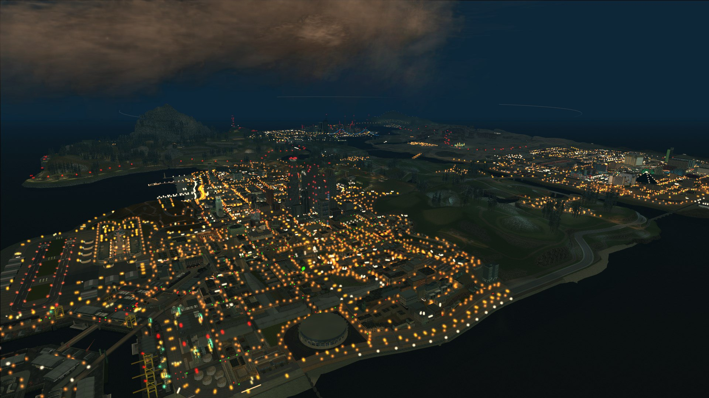

Игнорировать предложенные ограничения - ВКЛ.
Частота обновления 60hz [и более] Сглаживание FXAA - Выкл Сглаживание MXAA - x2 Верт. синхронизация - ВКЛ.
Населенность города - Выкл Разновидность населения - Выкл Фокусировочная шкала - Максимум
Качество текстур - Оч.Выс. Качество шейдеров - Оч.Выс. Качество воды, отражений и теней - Оч.Выс Мягкие тени - NVIDIA PCSAA
Качество травы - стандарт/высокая (жрет ресурсы)
Настройка спецэффектов Оч.Высокая/Высшая степень (высшая жрет ресурсы; добавит блики, улучшенный туман и эффект свечения от объектов освещения)
Степень размытия при движении - Максимум Эффект глубины резкости - ВКЛючено (жрет ресурсы)
Анизотропная фильтрация - x16 (убирает мыло) Затенение АО - высокая/высшая степень (добавляет объемное освещение, мягкие тени)
------------------------------------Доп.настройки:
Длинные тени - Выкл Тени высокого разрешения - Выкл Подгрузка высоко-детализированных объектов при полете - по желанию, я не замечал ухудшения производительности, как и визуальных изменений
Дальность прорисовки дистанции/объектов/теней - Выкл (минимальное значение)
Разрешение (рендер) - стандарт.
Если упадет производительность - понижай:
1) Спецэффекты с Высшей на Оч.Высокую степень, если не поможет, далее
2) тени, воду, фокусировочную шкалу, траву, подгрузку текстур при полете, дальность прорисовки.